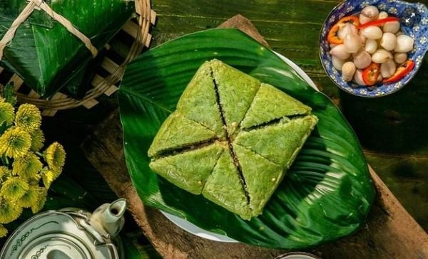
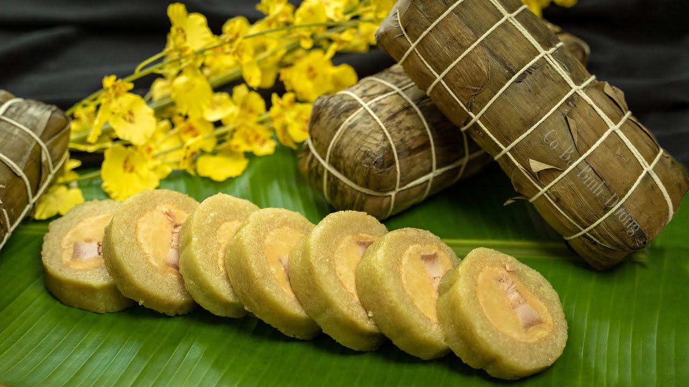
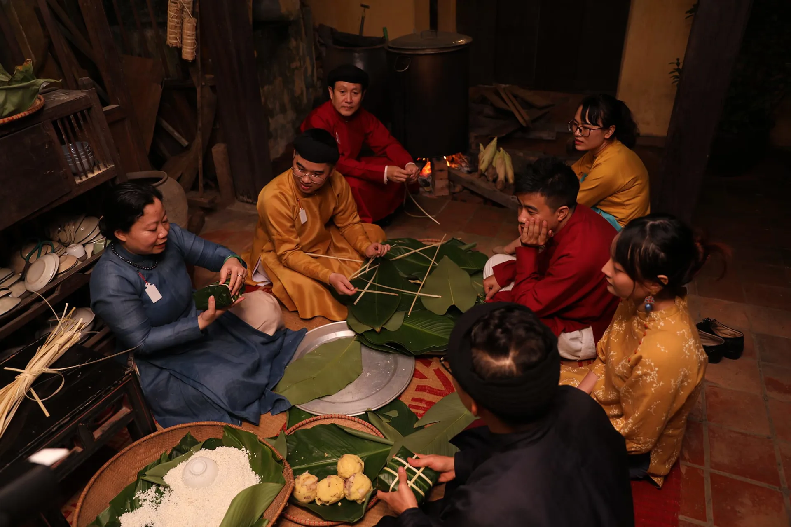

🥟 Gói Bánh Chưng, Bánh Tét
Ý Nghĩa Bánh Chưng, Bánh Tét
Bánh chưng và bánh tét là hai loại bánh truyền thống không thể thiếu trong ngày Tết của người Việt Nam.
Chúng không chỉ là món ăn mà còn mang ý nghĩa văn hóa và tâm linh sâu sắc.
Bánh Chưng - Biểu Tượng Của Đất
Bánh chưng có hình vuông, tượng trưng cho đất trong quan niệm "trời tròn đất vuông" của người Việt.
Theo truyền thuyết, bánh chưng được Lang Liêu - con trai thứ 18 của vua Hùng Vương thứ 6 - sáng tạo ra
để dâng lên vua cha trong cuộc thi tìm người kế vị.
Ý nghĩa của bánh chưng:
- Biểu tượng của đất: Hình vuông tượng trưng cho mặt đất, nơi con người sinh sống
- Lòng biết ơn: Nhắc nhở về công ơn của tổ tiên, đất nước
- Sự sum họp: Gia đình quây quần bên nhau gói bánh, tạo không khí ấm cúng
- May mắn, thịnh vượng: Màu xanh của lá dong, màu vàng của đậu xanh, màu trắng của gạo nếp tượng trưng cho sự phát triển
Bánh Tét - Đặc Trưng Miền Nam
Bánh tét có hình trụ tròn, là phiên bản miền Nam của bánh chưng. Tên "tét" có thể xuất phát từ cách cắt bánh
(tét từng khoanh) hoặc từ tiếng Khmer. Bánh tét phổ biến ở các tỉnh miền Nam và miền Trung.
Đặc điểm của bánh tét:
- Hình trụ tròn, dài
- Được gói bằng lá chuối thay vì lá dong
- Nhân bánh thường có thịt mỡ, đậu xanh, gạo nếp
- Một số nơi còn có bánh tét ngọt (nhân đậu xanh đường) hoặc bánh tét chay
Sự Khác Nhau Giữa Các Vùng Miền
🏮 Miền Bắc - Bánh Chưng:
- Hình vuông, gói bằng lá dong
- Nhân: thịt mỡ, đậu xanh, gạo nếp
- Luộc trong nồi lớn, thường luộc cả đêm
- Ăn kèm với dưa hành, củ kiệu
🌴 Miền Nam - Bánh Tét:
- Hình trụ tròn, gói bằng lá chuối
- Nhân tương tự bánh chưng nhưng có thể thêm trứng muối
- Luộc hoặc hấp
- Ăn kèm với củ cải ngâm chua ngọt
🏔️ Miền Trung - Cả Hai Loại:
- Có cả bánh chưng và bánh tét
- Bánh chưng miền Trung thường nhỏ hơn miền Bắc
- Bánh tét có thể có nhân đặc biệt như nhân tôm khô, thịt nạc
Nguyên Liệu và Cách Gói
Nguyên Liệu Cần Chuẩn Bị:
- Gạo nếp: Chọn loại nếp thơm, hạt tròn đều
- Đậu xanh: Đã bóc vỏ, ngâm và nấu chín
- Thịt mỡ: Thịt ba chỉ có cả nạc và mỡ, ướp gia vị
- Lá dong (bánh chưng) hoặc lá chuối (bánh tét): Rửa sạch, phơi khô
- Lạt giang: Để buộc bánh
- Gia vị: Muối, tiêu, hành khô
Quy Trình Gói Bánh Chưng:
- Rửa sạch lá dong, lau khô
- Xếp 2-3 lá dong chồng lên nhau tạo hình vuông
- Cho gạo nếp vào trước, sau đó là đậu xanh, thịt mỡ ở giữa
- Gấp lá lại và buộc chặt bằng lạt giang
- Luộc bánh trong nồi lớn, đổ nước ngập bánh
- Luộc liên tục 8-10 giờ, thỉnh thoảng đổ thêm nước sôi
- Vớt bánh ra, rửa sạch, để ráo và ép phẳng
Quy Trình Gói Bánh Tét:
- Rửa sạch lá chuối, cắt thành từng miếng vừa phải
- Xếp lá chuối thành hình ống tròn
- Cho gạo nếp, đậu xanh, thịt mỡ vào theo thứ tự
- Cuộn chặt và buộc bằng lạt giang
- Luộc hoặc hấp trong 6-8 giờ
- Để nguội trước khi cắt

🥟 Bánh Chưng
Bánh chưng vuông truyền thống

🥟 Bánh Tét
Bánh tét hình trụ miền Nam

👨👩👧👦 Gói Bánh
Gia đình cùng gói bánh
Ý Nghĩa Văn Hóa
Việc gói bánh chưng, bánh tét không chỉ là hoạt động chuẩn bị thức ăn mà còn là:
- Hoạt động gia đình: Cả nhà cùng quây quần gói bánh, tạo không khí ấm cúng
- Giáo dục truyền thống: Trẻ em học hỏi về văn hóa dân tộc qua việc gói bánh
- Kết nối cộng đồng: Hàng xóm thường giúp nhau gói bánh, tăng tình làng nghĩa xóm
- Lưu giữ kỹ thuật: Truyền lại cách gói bánh từ thế hệ này sang thế hệ khác
Bảo Quản và Sử Dụng
- Bánh chưng, bánh tét có thể bảo quản ở nhiệt độ phòng trong 5-7 ngày
- Nên treo bánh ở nơi khô ráo, thoáng mát
- Khi ăn, cắt bánh và chiên lại hoặc hấp nóng sẽ ngon hơn
- Bánh có thể dùng để cúng tổ tiên, biếu tặng hoặc ăn trong suốt dịp Tết